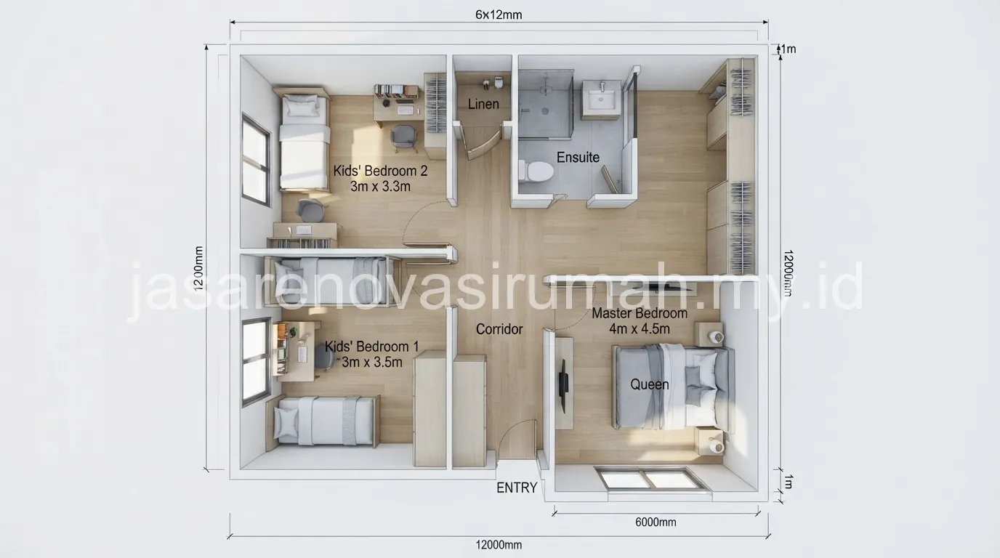

Denah rumah minimalis 3 kamar tidur 1 lantai yang nyaman umumnya membutuhkan lahan mulai dari 6x12 meter.
Tata letak kamar dikelompokkan di satu sisi agar area publik seperti ruang tamu dan dapur tetap lapang.
Penempatan bukaan jendela yang tepat pada tiap kamar juga penting agar sirkulasi udara dan cahaya alami tetap merata meski seluruh ruangan berada dalam satu lantai.
Berapa Luas Lahan Minimal untuk Denah 3 Kamar Tidur 1 Lantai?
Secara umum, lahan seluas 6x12 meter atau sekitar 72 meter persegi sudah cukup untuk menampung 3 kamar tidur, ruang tamu, dapur, dan kamar mandi dalam satu lantai.
Luas ini masih bisa dioptimalkan lebih lanjut tergantung bentuk lahan, apakah memanjang ke belakang atau melebar ke samping.
Lahan yang lebih memanjang biasanya lebih mudah menata 3 kamar tidur berjejer di satu sisi, sementara lahan yang melebar memungkinkan penataan kamar di dua sisi dengan koridor tengah yang lebih pendek.
Bagaimana Pola Penataan Kamar agar Sirkulasi Udara Tetap Baik?
Pola penataan yang disarankan adalah mengelompokkan 3 kamar tidur di satu sisi bangunan dengan jendela menghadap ke arah yang sama.
Hal ini bertujuan agar sirkulasi udara silang tetap bisa terjadi antara sisi depan dan belakang rumah.
Beberapa prinsip penataan yang membantu menjaga kenyamanan pada denah satu lantai:
- Kamar utama sebaiknya diletakkan di area yang lebih tenang, jauh dari ruang tamu dan carport.
- Kamar mandi diletakkan berdekatan dengan kamar tidur namun tetap mudah diakses dari ruang publik.
- Void kecil atau skylight bisa ditambahkan di area tengah rumah bila tidak semua kamar mendapat bukaan langsung ke luar.
- Jarak antar kamar tidur sebaiknya diberi sekat dinding yang cukup tebal untuk privasi suara.
Prinsip ini sejalan dengan pendekatan pada desain rumah minimalis modern yang mengutamakan efisiensi ruang tanpa mengorbankan kenyamanan penghuni.
Hal ini tetap berlaku meski diterapkan pada denah satu lantai dengan keterbatasan pengembangan vertikal.
Baca Juga: 15 Desain Rumah Minimalis Modern Tren 2026

Apa Saja Variasi Denah yang Bisa Diterapkan pada Lahan 6x12m?
Variasi denah pada lahan 6x12 meter umumnya membedakan posisi carport, letak dapur, dan orientasi kamar tidur.
Hal ini sangat bergantung pada kebutuhan dan kebiasaan keluarga penghuni.
Berikut 8 variasi pola denah yang bisa dipertimbangkan:
- Denah linear: carport di depan, ruang tamu-makan-dapur berjejer, 3 kamar di belakang.
- Denah dengan taman tengah kecil sebagai sumber cahaya untuk kamar tengah.
- Denah L dengan dapur menghadap taman samping.
- Denah dengan kamar utama di depan dekat ruang tamu, dua kamar anak di belakang.
- Denah dengan carport menyatu teras, ruang keluarga di tengah sebagai penghubung.
- Denah dengan void atap di atas ruang keluarga untuk sirkulasi udara tambahan.
- Denah kompak tanpa sekat ruang tamu-makan, kamar mandi luar dekat carport.
- Denah dengan dapur di depan dekat carport untuk akses belanja lebih praktis.
Setiap pola di atas perlu disesuaikan lagi dengan arah hadap rumah dan posisi matahari agar kamar tidur tidak terlalu panas di siang hari.
Untuk memastikan penataan denah benar-benar sesuai kondisi lahan Anda, sebaiknya berkonsultasi langsung dengan jasa arsitek profesional.
Mereka dapat melakukan survey dan pengukuran lahan secara langsung.
Kesalahan Umum Saat Merancang Denah 3 Kamar 1 Lantai
Kesalahan yang paling sering terjadi adalah memaksakan 3 kamar tidur berukuran sama besar tanpa mempertimbangkan kebutuhan ruang gerak di masing-masing kamar.
Akibatnya, salah satu kamar terasa terlalu sempit untuk digunakan secara nyaman.
Kesalahan lain yang perlu dihindari:
- Meletakkan kamar tidur terlalu dekat dengan dapur sehingga bau masakan mudah masuk ke kamar.
- Tidak menyisakan area servis seperti tempat jemuran atau gudang kecil di belakang rumah.
- Mengorbankan ukuran ruang tamu secara drastis hanya demi memuat 3 kamar tidur.
Pada akhirnya, denah 3 kamar tidur 1 lantai yang nyaman bukan hanya soal memuat seluruh ruangan yang dibutuhkan.
Tetapi juga memastikan sirkulasi udara, cahaya, dan privasi tetap terjaga meski lahan terbatas.
Konsultasikan kebutuhan denah Anda dengan tim desain arsitektur rumah kami agar hasil akhirnya benar-benar sesuai kebiasaan dan jumlah anggota keluarga.